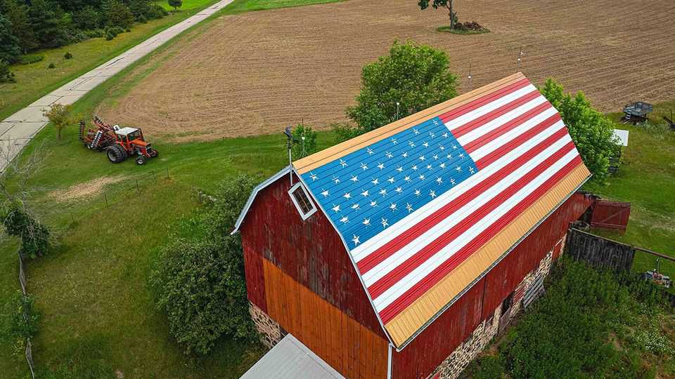

The midterms could reshape American politics far beyond Congress
Democrats may take control of several state governments

Oct 29th 2026
On a recent Saturday morning in Greendale, Wisconsin, 50 people gathered outside a modest ranch house to knock on doors for the Democratic Party. Addressing the group, Ben Wikler, the former chairman of the state party, stressed the importance of their task. Democrats have a chance to undo 16 years of Republican dominance in the state.
Wisconsin is not the only state Democrats have their eye on. Though the battle for Congress gets most of the attention nationwide, Democrats also have a chance to wrest control of several state governments. Republicans have “trifectas” in 23 states—meaning they control both chambers of the state legislature and the governorship. Democrats have 16. With a big enough blue wave, Democrats could create six new trifectas, including in Wisconsin, and break several Republican ones.
The consequences of such a shift would be far-reaching. State governments wield enormous power over matters like abortion, education, health care, taxation and labour laws. They also help determine the rules governing elections and the boundaries of congressional districts, shaping the balance of power in Washington. With a trifecta, a party can enact its agenda with relative ease. Wisconsin is a case in point.
Though Tony Evers, a Democrat, became governor in 2019, Wisconsin retains a raft of conservative laws enacted by his Republican predecessor, Scott Walker, who governed with a trifecta. Mr Walker weakened unions by allowing private-sector employees to benefit from collective bargaining without paying for it. He also sharply curtailed collective-bargaining rights for public-sector workers. His administration resisted attempts to increase the minimum wage, which is a paltry $7.25 an hour, and refused to expand Medicaid under Obamacare. Before leaving office Mr Walker signed legislation weakening his successor’s executive powers, making it harder for Mr Evers to reverse course.
With a trifecta, Democrats could undo Mr Walker’s “legacy of destruction”, says Devin Remiker, the state’s party chairman. They might also legalise marijuana, enshrine abortion rights in state law and end the state’s school-voucher system. Their prospects improved after a judicial election in 2023 delivered a liberal majority on the state Supreme Court. It struck down Wisconsin’s electoral maps, prompting Republican legislators to approve new ones drawn by Mr Evers rather than risk even less favourable versions being imposed by the court. Under the new maps, Democrats made big gains in 2024. They now need to flip just five seats in the state’s lower house and two in the upper house.
Elsewhere, the path to a Democratic trifecta varies. In Arizona, as in Wisconsin, Democrats would need to flip both legislative chambers to create the party’s first trifecta in over 60 years. In Michigan, Minnesota and Pennsylvania just one chamber would need to change hands. In Nevada the critical contest is a tight governor’s race. All six also happen to be presidential battlegrounds states. If the presidential election in 2028 is as closely fought as the previous two, control of their statehouses may matter. ■
Stay on top of American politics with The US in brief, our daily newsletter with fast analysis of the most important political news, and Checks and Balance, a weekly note that examines the state of American democracy and the issues that matter to voters.